TÜM TESTLER BAŞARILI (%100 PASS) Toplam 8 Ana Senaryo, 52 Doğrulama Kriteri Başarıyla Tamamlandı.
Uç Nokta: POST http://localhost:3000/tasks | Sonuç: 201 Created

Uç Nokta: GET http://localhost:3000/tasks | Sonuç: 200 OK

Uç Nokta: GET http://localhost:3000/tasks/1 | Sonuç: 200 OK

Uç Nokta: PUT http://localhost:3000/tasks/3 | Sonuç: 200 OK

Uç Nokta: DELETE http://localhost:3000/tasks/8 | Sonuç: 200 OK

Uç Nokta: GET http://localhost:3000/tasks?status=completed&priority=high&page=1&limit=5 | Sonuç: 200 OK

Uç Nokta: POST http://localhost:3000/tasks | Sonuç: 400 Bad Request

Uç Nokta: GET http://localhost:3000/reports/summary | Sonuç: 200 OK
